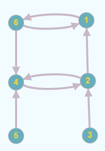

Definiție: Se numeşte graf orientat sau digraf o pereche ordonată de mulțimi notată G = (V, U), unde:
- V este o mulțime finită şi nevidă ale cărei elemente se numesc noduri sau vârfuri.
- U este o mulțime de perechi ordonate de elemente distincte din V ale cărei elemente se numesc arce.
Exemplu:

V = {1, 2, 3, 4, 5, 6}
U = {(1, 6), (2, 1), (2, 4), (3, 2), (4, 2), (5, 4), (6, 1), (6, 4)}
Se observă că arcele (1, 6) și (6, 1) sunt distincte.
Observații:
a) extremități ale unui arc: pentru arcul u = (x, y), se numesc extremități ale sale nodurile x şi y;
- x se numeşte extremitate inițială;
- y se numeşte extremitate finală;
- y se numește succesor al lui x;
- x se numește predecesor al lui y.
b) vârfuri adiacente: dacă într-un graf există arcul u = (x, y) (sau u = (y, x), sau amândouă), se spune despre nodurile x şi y că sunt adiacente;
c) incidență:
- dacă u1 şi u2 sunt două arce ale aceluiaşi graf, se numesc incidente dacă au o extremitate comună.
- dacă u1 = (x, y) este un arc într-un graf, se spune despre el şi nodul x, sau nodul y, că sunt incidente.
Definiție: Fie G = (V, U) un graf orientat și x un nod al său.
Se numeşte grad exterior al nodului x, numărul arcelor de forma (x, y) (adică numărul arcelor care ies din x), notat d+(x).
Se numeşte grad interior al nodului x, numărul arcelor de forma (y, x) (adică numărul arcelor care intră în x), notat d-(x).
Definiție: Fie G=(V, U) un graf orientat. Se numește drum în graful G o succesiune de noduri, notată
D = (x1, x2, ..., xk), cu proprietatea că pentru orice 1 ≤ i ≤ k-1, (xi, xi+1) este arc în G.
Lungimea unui drum este egală cu numărul de arce din care este alcătuit.
Pentru un drum D = (x1, x2, ..., xk), nodurile x1 și xk reprezintă extremitățile – inițială, respectiv finală.
Un drum se numește elementar dacă în el nu se repetă noduri. Un drum se numește simplu dacă în el nu se repetă arce.
Definiție: Se numește circuit un drum simplu în care extremitatea inițială și finală sunt egale. Se numește circuit elementar un circuit în care, cu excepția extremităților, nu se repetă noduri.
Lungimea unui circuit este reprezentată de numărul de arce din care acesta este alcătuit.
Definiții: Fie G=(V, U) un graf orientat.
Graful se numește conex dacă între oricare două noduri distincte există cel puțin un lanț.
Se numește componentă conexă un subgraf conex și maximal cu această calitate – dacă am mai adăuga un nod, n-ar mai fi conex.
Graful se numește tare conex dacă între oricare două noduri distincte există cel puțin un drum.
Se numește componentă tare conexă un subgraf tare conex și maximal cu această calitate – dacă am mai adăuga un nod, n-ar mai fi tare conex.
D = (3, 2, 1, 6, 4) este drum elementar.
D = (3, 2, 1, 6, 2, 4) este drum neelementar.
(1, 6, 2, 1) și (1, 6, 4, 2, 1) sunt circuite elementare.
(1, 6) și (2, 4) sunt componente tare conexe.